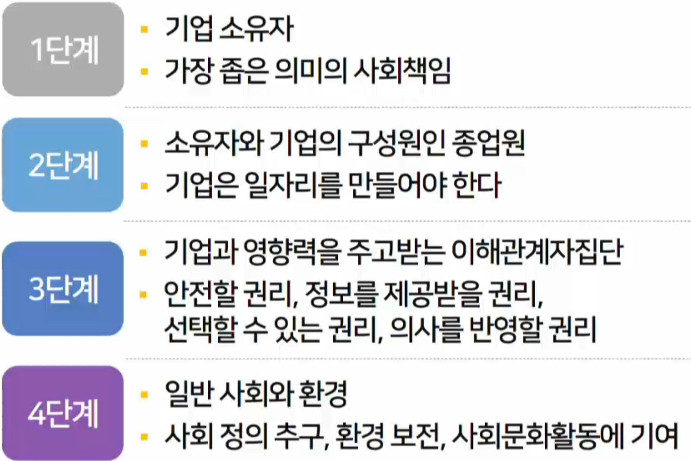

기업의 책임 및 윤리
목차
기업의 목적과 책임
경영윤리
기업의 목적과 책임
기업의 목적
기업은 왜 생겨나게 되었는가 -> 기업의 목표
이윤 창출은 기업의 목적은 가장 널리 인정
현실을 보면 이윤이 없는 상황에도 폐업은 쉬운 일은 아님 - 직원의 생계, 생존이 중요
이윤이 있는 경우에도 장기적 생존을 위해 구조조정을 감행하기도 함
일단 생존해야 기업의 책무 수행이 가능함
이윤도 생존을 위해 필요한 것.
헨리 포드: 기업의 목적은 사회에 봉사하는 것
포디즘 : 이윤을 가지고 최고의 급여를 주고 사회에 기여한다.
기업의 책임
전통적 견해
기업의 목적이자 사회적 책문은 생존해서 이윤 창출
밀튼 프리드먼: 유일한 책임은 기업 주인에게 돈을 벌어 주는 것
기업은 사회 봉사를 할 수있는게 아니니까 본연의 이윤 창출을 다하는게 본연의 목적이다.
사회 봉사는 정부,종교단체 등에 맡기고 기업은 이윤 창출,세금 납부로 충분
비 윤리행위를 하면서까지 이윤을 창출해야한다는 주장은 아님.
사회책임론
이윤 창출을 부정하지 않고 사회봉사 사업을 직접 수행해햐 한다고 보지도 않지만, 사회적으로 책임감 있는 행동 필요
기업의 비용은 올라가지만 장기적으로 더 많은 이윤을 가져온다.
사회적 평판이 좋은 기업에 능력 있는 지원이 몰리고 직원의 충성도가 높아지며 많은 고객을 확보할 수 있다.
사회책임의 대상
기업의 사회 책임(CSR:Corporate Social Reponsibility)
법 준수와 경제적 사명을 넘어 사회에 이익이 되는 장기 목표를 추구해야하는 의무

1단계: 주주
2단계: 직원,종업원들 - 복지,높은 급여를 반드시 해야한다. - 코스트코
3단계: 소비자들이 기업의 대상, 투자자를 보호할 의무가 있다.
4단계: 사회 정의, 사회문화 활동, 환경까지 - 여기부터는 의문제기
사회 책임을 위한 기업활동
기업 자선활동
전동적인 기부 및 자선 활동으로, 그 영역이 점차 확대되는 추세
사회적 솔선수범
자전이 보다 적극적이고 발전된 형태로 특수 봉사단체를 설립하여 운영하는 방식
삼성의 시각장애인을 위한 강아지를 교육후 배포
기업책임 준수활동
사회책임을 준수하기 위한 활동들을 수행
보디 숍: 포장 최소화, 동물 실험 금지
울마트: 뉴올리온즈 허리케인 피해 구난 활동
기업 사명과 정책을 반영하고 실천
사회적,정치적 이슈에 입장을 분명히하고,그것을 기업 사명에 반영하고 실천
벤엔드제리 아이스크림: 환경,지역사회 봉사를 사명에 명시
파타코니아 : 아름다운 자연과 야생을 보호하는 운동에 참여하고 지구의 환경을 회복시키는 도움을 줌으로써 자연을 실천한다.
공유가치 창출
사회책임경영
기업의 관점에서 일방적.단기적으로 전개되는 경영활동
공유가치창출
수혜자의 필요 파악,가치 공유하여 기업활동에 반영,사회 문제를 근본적으로 해결하는 경영활동으로 수익창출
커피는 공정무역커피가 있습니다. 커피를 만드는 목장이 임금이 낮기 때문에 공정한 가격을 주고 제대로 커피를 사서 커피륾 만들자는 것입니다. 이것이 사회책임경영입니다.
공유가치창출은 거기에 교육을 하고, 농장 자체를 업그레이드해주는 생산성도 높이고 품종도 개발해주는 것을 말합니다. 이렇게 사회 문제를 근본적으로 해결하자는 의미입니다.
경영윤리
경영윤리의 중요성
조직 주성원의 생계를 유지를 위해 조직이 생존해야하고 생존하기 위해서는 이익을 거두어야함
이익 창출에 대한 압박으로 무리를 해서라도 이익을 내야한다는 생각에 사로잡히기 쉬움
1980년대 정크본드(
Junk Bond)라는 사건으로 쓰레기 채원으로 마이클 밀컨이 쓰레기 채권을 대량 매입해서 다시 판매해서 크게 돈을 벌면서 문제가 발생하게 됨, 사기꾼이 등장함
오늘날 경영윤리의 문제는 끊임없이 발생하고 있음
휘슬블로어(Whistle Blower,내부제보자): 경력과 일자리를 잃을 수 있음에도 자신이 속한 회사의 잘못을 알리는 용감한 사람
엔론이 회사 부정을 저지르고 있다고해서 언론에 제보함 호루라기를 부르는 사람
윤리를 보는 관점
공리주의 윤리관
다수가 행복해진다면 소수를 희생하더라도 윤리적이라고 봄
개인 인권에 대한 침해가 발생하게 됨. 소수에 대한 희생에 대한 윤리를 물어볼 수 있다.
그의 반대되는 것이 인권론적 윤리관이라고 합니다.
휘슬블로우는 소수로 인해 다수가 손해를 보기에 윤리적이지 않은 사람이 된다.
인권론적 윤리관
개인이 말할 권리, 양심의 자유, 생명, 안전, 적절한 과정과 같은 개인의 권리와 자유를 우선적으로 존중하고 보호
휘슬블로우는 보호해야한다.
집단의 효율성이 상실될 가능성이 높아진다.
윤리를 보는 관점
정의론적 윤리관
규정과 규칙에 따라 공정하게 경영해야 하며 성별.인종등의 자의적 판단에 따라서는 안된다.
능력도 타고나는 것이기 때문에 모든 직원은 똑같은 급여를 받아야한다는 주장이 될 수 도 있다.
경영에서 생산성이 떨어지는 문제가 발생할 수 있다.
무사안일주의로 흘러 갈수 있음
사회 계약론적 윤리관
산업계와 사회 전반에 통용되는 관행 에 근거하여 경영의 옳고 그름을 판단해야한다.
사회에서 서로 집단들이 계약에 의해서 인정하기 때문에 경영을 하고 있기때문에 윤리적이라고 할 수 있다.
윤리경영을 위한 활동
윤리 교육 훈련
경영자와 전 직원이 경영윤리에 지속적으로 관심을 가지고 그 중용성을 인지해야 함
윤리에 관심없는 것도 비윤리적이라고 할 수 도 있다.
교육 훈련이 필수적
윤리자문역제도,윤리 담당부서
미국의 윤리 자문 역(Ethical Advocate)
한국의 준법감시인제도
법을 지키는지 안지키는지 검사하는 제도
윤리강령 제정
직원들의 행위에 대한 도덕적 기준을 제시하는 **윤리강령(Code of Ethics)**을 제정하여 윤리경영의 기준을 제시
구체적이여야합니다. 행위까지 규정하고 지식하는 것을 말합니다.
추상적인 윤리를 말하는게 아닙니다.
윤리적 기업문화의 창출
교육훈련, 윤리강령 제정 등이 확고하게 정착되기 위해서는 윤리적인 기업문화를 가꾸어 나가야함.
연습문제
기업의 목적에 대한 전통적 견해는?
기업의 목적은 이윤창출이라는 것이 전통적 견해이다. 이윤을 창출하고 세금을 납부해서 사회에 기여하는 것이 중요하며 사회적 봉사 등은 기업이 잘 할 수도 없고 기업 본연의 활동에 집중하기 어려워지기도 한다는 것이다.
기업의 목적은 사회에 봉사하는 것이라고 주장한 사람은?
헨리 포드는 당시 혁신적 기업 경영으로 큰 수익을 내고 노동자에 당시 최고 수준의 봉급을 지급하여 미국의 자가용 시대를 열었다. 그는 기업의 목적은 사회 봉사에 있다고 주장하기도 했다.
기업의 목표에 대한 전통적 견해의 대표적인 학자인 밀튼 프리드먼의 주장은?
밀튼 프리드먼이 전통적 견해의 대표적 학자로 기업은 이윤 창출을 통해 소유주에 돈을 벌어주어야 한다고 주장했다. 그렇다고 비윤리적인 행위를 옹호하는 것은 결코 아니다.
사회적 책임론의 주장인 것은?
이윤 창출을 부정하는 것은 아니고 사회봉사를 기업이 직접 해야 한다고 주장하는 것은 아니다. 사회적 책임을 통해 사회가 기업에 기업 활동을 하도록 협조한 빚을 갚아야 하며 이는 장기적으로 이윤 창출에 도움이 된다고 한다. 다음
한국의 한 기업은 외국 특정 지역의 지사가 계약 채결을 위해 적정 수준의 뇌물을 주는 것을 용인하고 있다. 진출 국가에서는 적절하다고 여겨지는 관행이기에 윤리에 위반된다고 생각하지 않는다. 이 기업의 윤리관은?
사회계약론적 윤리관은 윤리의 절대적 판단 기준은 없으며 사회적으로 윤리적이라고 여겨지는 계약에 의해 경영을 하면 윤리적이라고 보아야 한다는 주장이다. 아프리카에서 임금 수준은 그 사회의 사회계약에 의해 지급되고 있는 것이기에 선진국에 비해 절대적으로 낮더라도 비윤리적 임금이라고 보기 어렵다는 것이다.